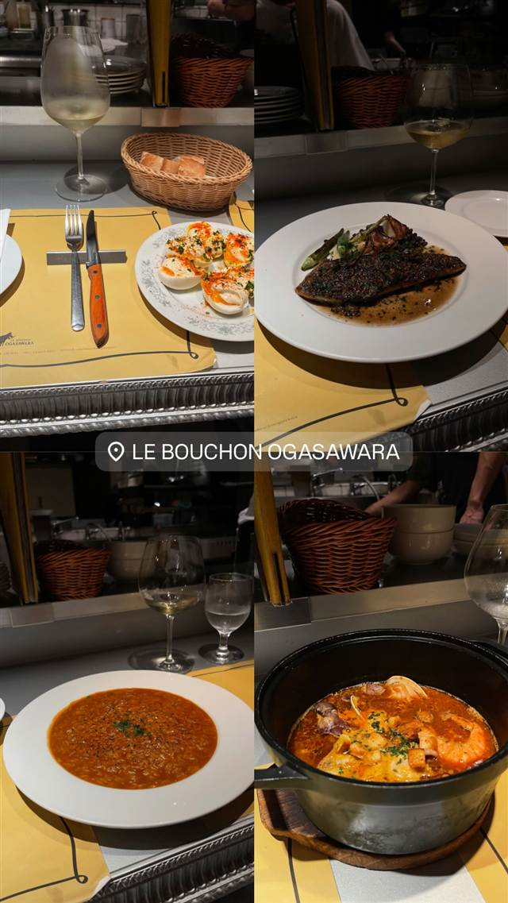

かしわビストロ バンバン
近江黒鶏を毎日直送、甘辛い炭火焼きが看板
かしわビストロ バンバン
神泉駅からすぐの「かしわビストロ バンバン」は2014年開業のビストロ。希少な地鶏・近江黒鶏を毎日直送で仕入れ、甘辛いタレで焼き上げる「近江黒鶏の炭火焼き」が看板メニュー。
TRIVIA
豆知識
- 希少な地鶏「近江黒鶏」を毎日直送で仕入れている
REVIEWS
世間の評判
3.54食べログ
ビスマルクピザと満席の人気店
- ビスマルクのピザや白レバーのムースなど料理の完成度を評価する声が多い
- 活気があっておしゃれな雰囲気を評価する声がある
- 2時間制でテーブルが手狭なため落ち着かないと感じる人もいる
食べログ 口コミ1578件
| 創業 | 2014年開業 |
|---|---|
| 看板 | 近江黒鶏を使った「近江黒鶏の炭火焼き」など鶏料理 |
| こだわり | 希少な地鶏「近江黒鶏」を毎日直送で仕入れ、甘辛いタレでパリッと香ばしく、身はジューシーに焼き上げる。 |
| どこから | 都心 |
| 営業時間 | 月〜木 18:00-23:00 金 18:00-23:30 土 17:00-23:30 日 17:00-23:00 |
| 予算 | 夜 ¥4,000～¥4,999 |
| 場所 | 神泉 東京都渋谷区神泉町（神泉駅より徒歩30秒） |
| メモ | 神泉駅からすぐ、渋谷駅から徒歩6分。カウンター・テーブル席あわせて42席。 |
食べたもの：ニョッキ
NEARBY
近い店・同じ系統の店
-
 ブランチ 神泉（南口徒歩約2分）
The3rd.Shibuya
南国リゾート風の店内、女性シェフのフレンチトーストが人気
昼 ¥2,000～¥2,999 夜 ¥3,000～¥3,999
ブランチ 神泉（南口徒歩約2分）
The3rd.Shibuya
南国リゾート風の店内、女性シェフのフレンチトーストが人気
昼 ¥2,000～¥2,999 夜 ¥3,000～¥3,999
-
 ワインバー 神泉
ANDs.
契約農家の国産食材と、黒板に並ぶ十数種のグラスワインが自慢
夜 ¥5,000～¥5,999
ワインバー 神泉
ANDs.
契約農家の国産食材と、黒板に並ぶ十数種のグラスワインが自慢
夜 ¥5,000～¥5,999
-
 ワインバー 神泉
neo（ネーオ）
元焼き鳥屋を改装、予約不要で楽しむイタリアンナチュラルワイン
夜 ¥4,000～¥4,999
ワインバー 神泉
neo（ネーオ）
元焼き鳥屋を改装、予約不要で楽しむイタリアンナチュラルワイン
夜 ¥4,000～¥4,999
-
 ハンバーガー 神泉駅
Chillmatic Hamburger & Bistro
仕込みに6日かける自家製パストラミのチーズバーガー
昼 ¥2,000～¥2,999 夜 ¥2,000～¥2,999
ハンバーガー 神泉駅
Chillmatic Hamburger & Bistro
仕込みに6日かける自家製パストラミのチーズバーガー
昼 ¥2,000～¥2,999 夜 ¥2,000～¥2,999
-
 ビストロ 中目黒駅
nou（ノウ）
看板のないプレハブ2階に隠れる千葉県産野菜のフレンチ
夜 ¥8,000～¥9,999
ビストロ 中目黒駅
nou（ノウ）
看板のないプレハブ2階に隠れる千葉県産野菜のフレンチ
夜 ¥8,000～¥9,999
-

ビストロ 神泉 LE BOUCHON OGASAWARA（ル・ブション・オガサワラ） 北海道から毎日届く魚介で作る本格ブイヤベース 夜 ¥6,000～¥7,999